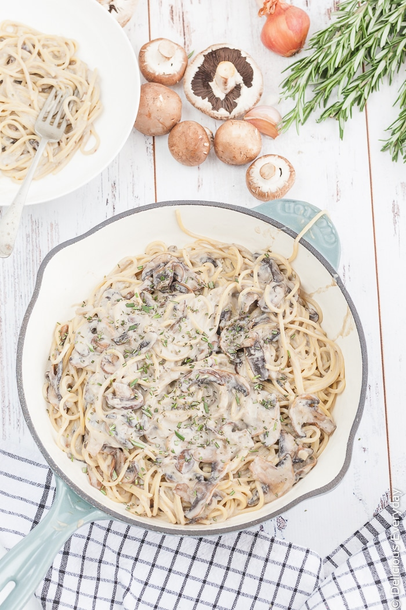

Mushroom pasta

Pasta with a delicious creamy mushroom sauce
The taste of pasta with that of cream and mushrooms is too good to not cook it
Try this recpie and i promise, you won't regret it!
Ingredients
- Pasta of your choice (I recommmend spaghetti)
- Butter
- Cream
- Mushrooms
- Onions
- Flour
- Salt, pepper
- Seasonigs of choice
Steps
- Put your pasta in boiling salted water to cook while you are working on sauce
- Dice 1 big onion
- Dice twice as much mushrooms
- Put butter on a pan, let it melt and get your onions into the pan
- Wait till onions become mpre transparent and put your mushrooms in too
- After about 3 minutes spread a tablespoon of flour on mushrooms and onions
- After 2 minutes por a glass of cream into the pan and add salt pepper and other seasoning if you want
- Wait for the sauce to get thicker, but not too thick
- Put the pasta on a plate and piur the sauce on pasta
- Enjoy :)